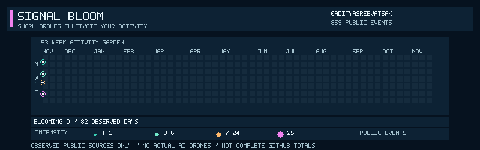
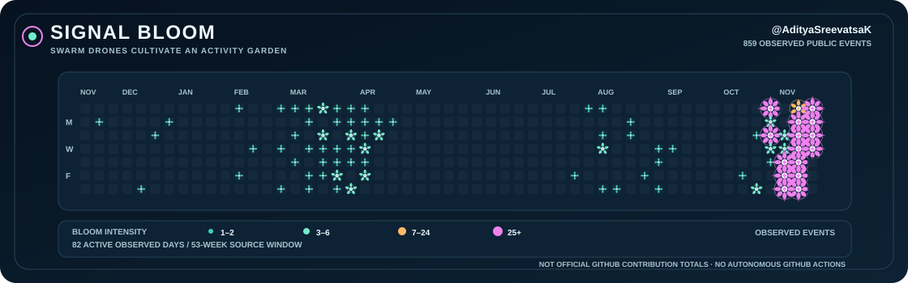
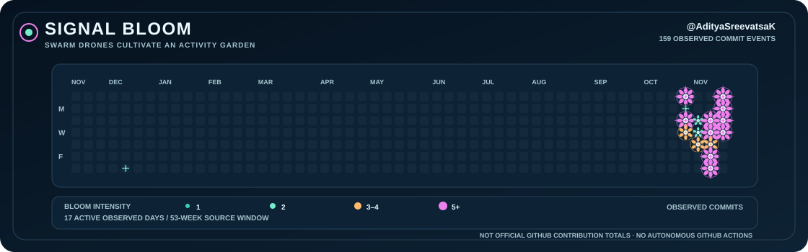

GitHub Activity Studio / Agent Swarm exploration
Signal Bloom
Four pollinator drones energise actual recorded contribution cells. Small dates grow delicate teal flowers; busier dates bloom into amber and violet constellations. Every cell stays intact.
Your contribution garden

Open this export at full size · Compare previous Agent Swarm designs

All observed events
Includes observed public commits, PR openings and merges, issues and releases. Not GitHub's official contribution tally.

Authored commits only
Flowers appear exclusively on days with captured authored commit events. PRs and issues do not inflate their intensity.
